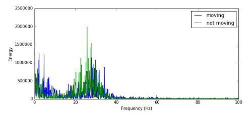
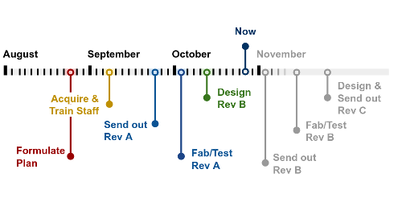
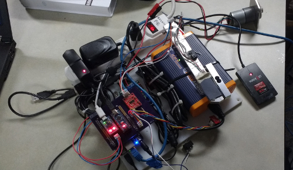
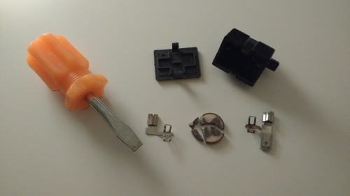

Seiya Ono
seiya.ono12@gmail.com

Projects
School
CS61A Projects
Hog
A mathematical, dice rolling based game

Maps
Webapp that cuts a map into sections based off of food preference. Uses k-means to determine cluster centers for restaurants that the user likes.

Ants
Game similar to Plants vs Zombies, where there are ants that use food to fight against an onslaught of Stanford bees.

Scheme
Python backboned scheme interpreter.

CS61B Projects
NBody
Planetary orbit simulation.
Array / Linked List Double Ended Queue
Implmented the Array and Linked List Double Ended Queue. API included addFirst, addLast, isEmpty, size, printDeque, removeFirst, removeLast, and get.
Editor
A graphical text editor.

Bear Maps
Google Maps-like mapping using OSM. Has zoom, refocusing, and shortest path implemented.

CS61C Projects
Flight Map
Implementing a flight map simulation using linked lists
Helped learning C, pointers, memory, and debugging skills
EE16A
Light Sensor Scanning
Use single pixel photodiode to try and image a playing card

Resistive Touch Screen
Create a resistive touch screen with 9 spots

Capacitive Touch Screen
Made a single pixel capacitive touch screen

EE16B
Simulated BMI
Categorizing different neuron firings from a simulated BMI using Discrete Fourier Transform to view the energy of different states of a subject and Principle Component Analysis to sort different signals from neurons.

Sixt33n Bot
A dual motor voice controlled robot. Mic Demo Bot Demo

Pioneers in Engineering
DevOps
Deploy Beagle Bone Blacks with custom software, and send out secure updates
Develop a continuous integration system
Create a git presentation to teach terminal basics and git to new staff

Smart Sensors Project Manager
Recruit and train new staff

Put together schematics and route boards

Maintain a consistent work flow and expedite board order process

Leaky Revamp
Design the PCB and revamp the RFID activated door opening robot. Leaky Demo
Robot design and open air testing
Final hardware and software integration

Personal
Mini Fridge Fix
Fixed up a broken mini fridge. Not really a project, but I to learn how fridges work and what PTC relay is. Also obtained a fridge.
Smahed up ceramic thermistor
